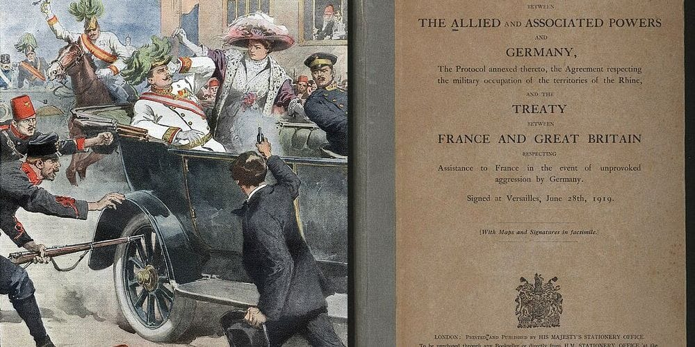
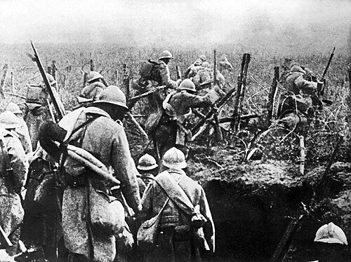
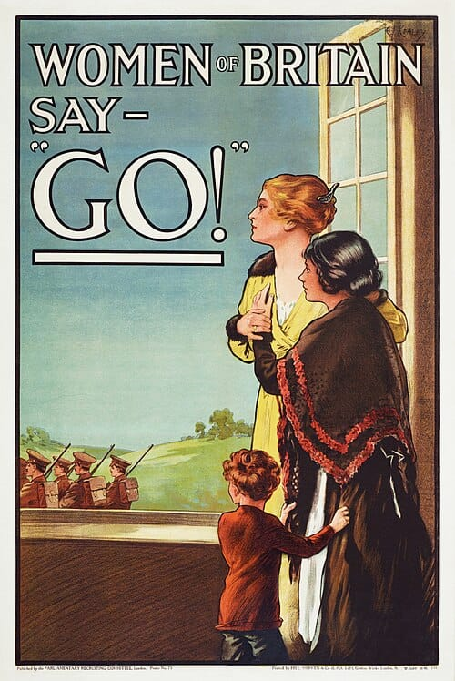
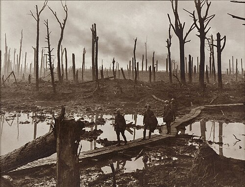
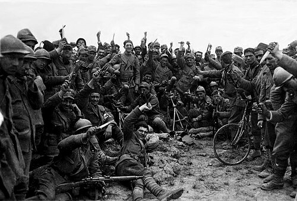
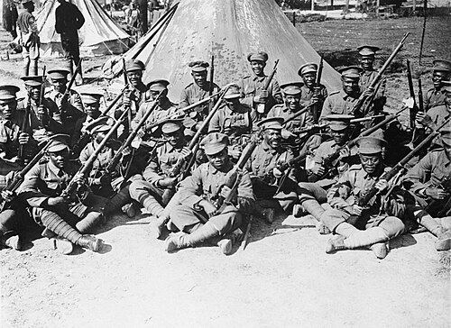
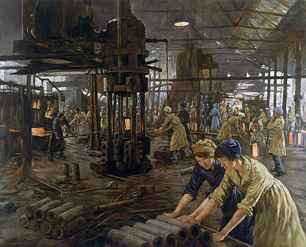
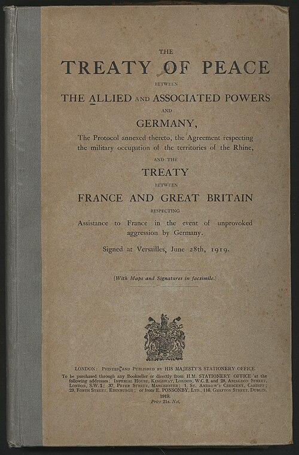
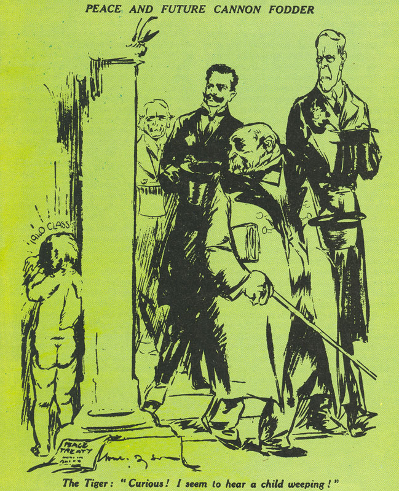
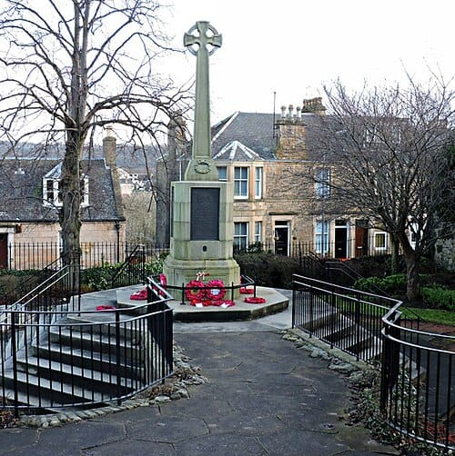

KS3: The Great War (1914-1919)

KS3: The Great War (1914-1919)
Student Workbook

The Stubbington War Memorial, built in 1922 over the village pump on the green. Designed by the mother of the only woman commemorated, its unique wooden shelter stands as a powerful and poignant local reminder of the devastating human cost of the conflict on tight-knit communities.
Progress & Assessment Tracker
| Progress & Assessment Tracker |
Do Now |
Level |
Teacher Comment |
| Why were young men so desperate to join the slaughter of 1914? | Do Now: / 5 | | |
| ↳ .......................................................................... | / | | |
| Did British generals make the horror of trench warfare worse? | Do Now: / 6 | | |
| ↳ .......................................................................... | / | | |
| How much of a 'World' War was it, and why were the Empire's troops forgotten? | Do Now: / 1 | | |
| ↳ .......................................................................... | / | | |
| How did a war fought miles away completely control daily life in Britain? | Do Now: / 6 | | |
| ↳ .......................................................................... | / | | |
| Did the Treaty of Versailles solve the problems of 1914, or create the nightmares of 1939? | Do Now: / 6 | | |
| ↳ .......................................................................... | / | | |
| How did the "Lost Generation" impact the village of Stubbington? | Do Now: / 6 | | |
| ↳ .......................................................................... | / | | |
| Assessment: The Great War | Do Now: / 5 | | |
| ↳ .......................................................................... | / | | |
| Final Unit Grade: |
|
|
|
Why were young men so desperate to join the slaughter of 1914?
Learning Objectives
Understand the short-term and long-term causes of WWI.
Empathize with the young men volunteering in 1914.
Vocabulary Check
Style: Vocabulary in Context
Write a short paragraph using at least FOUR of the vocabulary words below correctly.
Conscription | Pals Battalions | Propaganda | Historiography | Pragmatism

In the summer of 1914, Europe resembled a giant tinderbox waiting for a spark.
The Arms Race and Imperial Rivalry
To understand why Europe was so tense by 1914, we must look at the intense military and imperial competition between the Great Powers. A massive naval arms race was triggered in 1906 when Britain launched the HMS Dreadnought. This revolutionary battleship was heavily armoured with steel 28 cm thick, carried a crew of 800 sailors, and possessed huge guns that could blow up enemy ships from 32 km away. This made all older ships instantly obsolete. A frantic race began: between 1906 and 1914, Britain built 29 Dreadnoughts while Germany built 17.
Tensions were further pushed to breaking point by imperial clashes in North Africa. During the Second Moroccan Crisis in 1911, Germany sent the gunboat SMS Panther to the port of Agadir to aggressively challenge French control of the region, deeply alarming the British navy.
The July Days: The Countdown to War
The assassination of Archduke Franz Ferdinand on 28 June 1914 triggered a rapid chain reaction known as the 'July Days'. On 23 July, Austria-Hungary sent a strict list of demands to Serbia, including a demand to let Austrian officials run the assassination inquiry. When Serbia refused this demand to protect its independence, Austria-Hungary declared war on 28 July. The alliance system then activated like clockwork: Germany warned Russia not to intervene, and when Russia mobilised its army, Germany declared war on Russia on 1 August. On 3 August, Germany declared war on France, and on 4 August, Britain declared war on Germany after German troops invaded neutral Belgium.
When Great Britain declared war on Germany on August 4, 1914, the British military faced an immediate crisis. Unlike its European rivals, Britain did not have conscription. Its small professional army was vastly outnumbered. To build a massive fighting force from scratch, Secretary of State for War Lord Horatio Kitchener launched the most famous recruitment campaign in British history. By the end of September 1914, over 750,000 British men had volunteered.
Q1. Part A: Core Factual Recall
1. What was the 'spark' that triggered the outbreak of the First World War in 1914?
2. Why did Great Britain desperately need volunteers to fight when war was declared?
To encourage recruitment, the government promised that friends, sports teammates, and work colleagues could enlist and fight side-by-side in "Pals Battalions."
Local History: The Pompey Pals
For men living in Stubbington, Fareham, and Portsmouth, the call to arms was answered locally with overwhelming enthusiasm. In August 1914, the Portsmouth Citizens Patriotic Recruiting Committee formed the 14th and 15th Battalions of the Hampshire Regiment, famously known as the "Pompey Pals". Men who had grown up on the same streets, worked in the same dockyards, and supported the same football teams now trained together, sharing tents and rations before crossing the Channel to France.
Tragically, the fatal flaw of the Pals Battalions was that industrialized slaughter could wipe out the male population of entire streets in a single afternoon. At the Battle of the Somme on September 3, 1916, 587 men from the 1st Pompey Pals went "over the top" near the River Ancre. Facing heavily fortified German machine guns, 457 of them became casualties (killed, wounded, or missing) in a single day. The devastating news arrived in Portsmouth via telegraph, shattering local families and leaving a deep, enduring scar on the community.
Q2. Part B: Core Factual Recall (Continued)
3. Who were the 'Pompey Pals'?
4. What happened to the 1st Pompey Pals on September 3, 1916?

The British government needed millions of men, and they used every psychological trick available to get them.
Source A: 'Women of Britain Say GO!' Poster (1915)
This famous propaganda poster featured women and children looking out of a window as soldiers marched away. It was designed to weaponize guilt and masculinity, implying that real men protected women and children, and that women wanted their men to fight.
Source B: The White Feather Campaign
If official propaganda didn't work, social peer pressure often did. Admiral Charles Fitzgerald founded the 'Order of the White Feather' in 1914. He encouraged women to hand out white feathers—a traditional symbol of cowardice—to any young man seen out of uniform in public. This weaponized social shame. Many teenage boys, terrified of being humiliated in front of their friends or girlfriends, lied about their age to escape the shame, joining the army at just 15 or 16 years old.
Q3. Part C: Key Features
Describe one feature of the European Alliance System in 1914. (2 marks)
- The Traditional View: For decades, the popular narrative suggested these young men were simply naive. It was argued they were tricked by aggressive propaganda posters, bullied by women handing out white feathers (symbols of cowardice), or were simply seeking a cheap adventure to escape boring factory life, believing the war would be "over by Christmas."
- The Revisionist View (Modern Historians): Historians like Catriona Pennell and Gary Sheffield challenge this "gullible volunteer" myth. Pennell argues that volunteers were not blindly enthusiastic; they made rational choices driven by genuine moral outrage over Germany's invasion of "Brave Little Belgium" and believed they were defending civilization. Sheffield highlights economic pragmatism: for working-class men, the army offered guaranteed daily pay (a shilling a day), regular meals, and a warm coat during a time of economic hardship.
Q4. Part D: Source Analysis:
Study Source A and Source B. Which method of recruitment do you think was more effective in convincing a 16-year-old boy to lie about his age and enlist: the official government poster, or the threat of a white feather? Explain your reasoning.
Q5. Part E: Causal Matrix (Push vs. Pull Factors)
Categorize the following reasons for enlistment into "Push Factors" (negative things driving them away from home) and "Pull Factors" (positive things attracting them to the army): The threat of receiving a white feather, the promise of a shilling a day, grinding poverty at home, defending 'Brave Little Belgium', government propaganda.
Q6. Part F: Historical Interpretations
1. How does historian Catriona Pennell's view of WWI volunteers differ from the traditional view?
2. Explain what historian Gary Sheffield means when he suggests volunteers were motivated by "economic pragmatism."
Q7. Part X: The "Judgement & Nuance" Paragraph Scaffold
Write a structured paragraph answering the following: "To what extent was government propaganda the most important reason for the mass enlistment of 1914?"
- Thesis Statement: Establish your main argument (e.g., While state propaganda created the initial momentum, economic reality and local community ties were more decisive...)
- Factual Evidence: Provide specific knowledge (e.g., Pompey Pals, a shilling a day, white feathers...)
- Counter-Perspective: Acknowledge the alternative historian's view (However, as historian Catriona Pennell argues, it would be reductive to ignore the genuine moral outrage over...)
- Evaluation: Conclude by weighing the factors against each other to form a final historical judgment.
Documentary / General Notes
Title / Topic: ______________________________________________________________
Did British generals make the horror of trench warfare worse?
Learning Objectives
Analyze the conditions of trench warfare.
Evaluate historical interpretations of General Haig.
Vocabulary Check
Style: Vocabulary Mapping
Write a historically accurate sentence connecting two terms from the glossary box below.
Attrition | Artillery | No Man's Land | Trench Foot | Causation
Your Sentence:
By late 1914, the hope of a quick war vanished. Both sides dug a vast, unbroken network of defensive trenches stretching from the English Channel to the Swiss border, creating the stagnant deadlock of the Western Front. Life in these trenches was defined by extreme physical hardship and constant danger. Soldiers lived in subterranean dirt channels, constantly exposed to freezing mud, torrential rain, and waterlogged ground. This relentless dampness caused "trench foot"—a painful medical condition where a soldier's feet began to rot inside wet boots. Trenches also overflowed with rotting organic waste and human debris, attracting millions of disease-carrying black rats and lice, while the air was frequently poisoned by chlorine or mustard gas.
Attrition and New Technologies
When the rapid movement of 1914 broke down into the deadlock of the trenches, military leaders were forced to rely on a strategy of attrition—the brutal process of gradually destroying or weakening the enemy by attacking them continuously until they ran out of men and supplies.
To break the stalemate, new and highly dangerous technologies were deployed. In 1914, aircraft were incredibly fragile, constructed merely of wood and thick cloth held together by piano wire. Pilots flew in completely open cockpits without parachutes, relying entirely on thick gloves, layers of warm clothes, and leather helmets to stop themselves from freezing to death in the air.
This horrific reality of industrialized warfare became the backdrop for one of the greatest military debates in British history: the competence of its high command. On July 1, 1916, General Douglas Haig launched the Battle of the Somme to relieve pressure on the French army at Verdun. Believing that a week-long artillery bombardment had completely shattered the German defensive wire and dugouts, Haig ordered British troops to march slowly across No Man's Land in neat, orderly rows while carrying heavy equipment packs.
The result was an absolute slaughter. German defenders, who had safely survived the bombardment in deep, concrete-reinforced underground bunkers, emerged with machine guns the moment the shelling stopped. On the first day of the Somme alone, the British Army suffered 57,470 casualties, including 19,240 deaths—the bloodiest single day in British military history.
This disaster led to two sharply contrasting historical interpretations of General Haig. For decades, popular history portrayed Haig as a foolish, outdated "donkey" leading brave, patriotic "lions" to useless slaughter—a view heavily supported by wartime politicians and famous war poets. However, modern revisionist historians offer a different interpretation. They argue that Haig faced an unprecedented technological challenge, forced to fight a massive, industrialized war with no prior template. They point out that he eventually adapted his tactics to utilize tanks, creeping artillery barrages, and coordinated aircraft to secure the final Allied victory in 1918. Whether Haig was a callous butcher or a determined strategist remains a central question for historians.
Q1. Part A: Task
**Part A: Core Comprehension** 1. Why did the Western Front become a stagnant deadlock by the winter of 1914? 2. Describe two physical challenges soldiers faced inside the Western Front trenches. 3. Why did General Douglas Haig believe the infantry could easily walk across No Man's Land on July 1, 1916? 4. What were the British casualty figures for the first day of the Battle of the Somme?

Soldiers on the Western Front lived in a subterranean world of mud, fear, and disease.
Physical Hardships
The trenches were frequently flooded with freezing, foul-smelling water. Men often stood waist-deep in mud for days, leading to a horrifying fungal infection called Trench Foot. If left untreated, the foot would turn black and gangrenous, requiring amputation. Giant, disease-carrying black rats—some the size of cats—fed on unburied corpses and swarmed the dugouts. Lice infested the soldiers' clothing, causing 'Trench Fever', a disease characterized by high fever and severe joint pain.
New Weapons of Terror
Beyond the disease, the trenches offered no safety from the industrialized weapons of 1914. Artillery bombardments could last for weeks, firing millions of explosive shells that caused devastating shrapnel wounds and buried men alive. The psychological toll of this constant, deafening bombardment led to a new psychiatric condition called 'Shell Shock' (now known as PTSD). Furthermore, 1915 saw the introduction of poison gas (chlorine, phosgene, and mustard gas). Mustard gas was particularly feared; it was heavier than air, sinking into the bottom of trenches, and caused agonizing internal and external blisters, blinding its victims and destroying their lungs.
Q2. Part B: Task
**Part B: Conceptual Analysis** 5. **Causation:** Why did the deep, concrete-reinforced bunkers built by the German army cause the British offensive on the Somme to fail? 6. **Historical Interpretations:** Explain why popular history books might refer to British soldiers as "Lions led by Donkeys" during the First World War. 7. **The "IDEA" Paragraph Scaffold:** Write a structured paragraph explaining whether General Haig deserves to be remembered as the "Butcher of the Somme." Use Identify, Describe, Explain, Analyse.
To truly understand the conditions, we must read the words of the men who survived them.
Source C: Extract from the diary of Private Arthur Savage (1915)
"The mud was so deep and thick that if you slipped off the duckboards, you would sink up to your waist. I saw men drown in that mud. The rats were as big as cats, and they were completely fearless. They would run across your face while you tried to sleep. But the worst was the smell—a mixture of cordite, chloride of lime, and the sweet, sickly stench of death that never left your nostrils."
Q3. Part C: Paper 1 Key Features
1a. Describe one feature of early military aircraft. (2 marks)
1b. Describe one feature of trench warfare. (2 marks)
Research tasks for independent study.
Q4. Part D: Task
**Part C: Contemporary Source Analysis** 8. Study Source A. Why should a historian exercise caution when using the memoirs of a former politician like David Lloyd George to evaluate General Haig's competence?
Q5. Part E: Source Analysis (Utility):
How useful is Source C for a historian studying the physical conditions of trench warfare? Use the source's content and its provenance (who wrote it and when) in your answer.
Q6. Part F: Task
9. Open your browser and search for the **"1916 Battle of the Somme cinema film"**. Research how British audiences reacted when this real, uncensored footage of the front line was shown in local cinemas in 1916. Write down their reactions. 10. Look up **"WWI whale oil trench foot prevention"**. Write a brief paragraph explaining the strict daily foot care routines officers forced soldiers to perform to maintain army health in wet conditions. 11. Search for **"General Haig modern revisionist defense"**. Find and write down one argument made by a modern historian defending Haig's overall strategy on the Western Front.
Q7. Part X: Source Utility
Study Source A (the photograph of the flooded trench).
How useful is Source A for an inquiry into the conditions on the Western Front? (8 marks)
Q8. Part X: Evaluating Interpretations
Study Interpretation 1 (a historian writing in 2014 stating: 'The British high command callously ignored the horrific conditions of the mud').
How far do you agree with Interpretation 1 about the attitude of the high command? Explain your answer. (16 marks + 4 SPaG)
Documentary / General Notes
Title / Topic: ______________________________________________________________
How much of a 'World' War was it, and why were the Empire's troops forgotten?
Learning Objectives
Recognize the global nature of the conflict.
Understand the racial barriers faced by colonial troops.
Vocabulary Check
Style: Mini-Frayer Model
Complete the Frayer Model for the term: Eurocentric
| Definition |
Historical Example |
| Non-Example / Sketch |
Your own sentence |

When Britain declared war on Germany in 1914, it did not just commit the men of the British Isles; it committed a vast global empire. By the end of the conflict, nearly 3 million men from across the British Empire and its dominions had served.
The Scale of the Contribution
The sheer scale of the imperial effort was staggering. The British Indian Army sent over 1.5 million men to fight across multiple theaters, including the freezing trenches of Ypres and the scorching deserts of Mesopotamia. Without the arrival of two Indian divisions in late 1914, the British line on the Western Front might have collapsed entirely.
The bravery of these men was extraordinary. On 31 October 1914 at the First Battle of Ypres, Sepoy Khudadad Khan of the 129th Baluchis operated his machine gun under heavy fire until all the other men in his team were killed and he himself was severely wounded. He was the first Indian soldier to be awarded the Victoria Cross, Britain's highest military honor.
Meanwhile, the British West Indies Regiment (BWIR) raised over 15,000 men from the Caribbean, and hundreds of thousands of African men were recruited—often forcibly—to serve as soldiers and carriers in the brutal East African campaign, where disease and exhaustion claimed countless lives.
Q1. Part A: Core Factual Recall
1. How many men did the British Indian Army contribute to the First World War?
2. What crucial role did Indian troops play on the Western Front in late 1914?
3. What was the British West Indies Regiment (BWIR), and how many men served in it?
4. Why did soldiers of the BWIR mutiny in Taranto, Italy, in 1918?

Racial Hierarchy and Discrimination
Despite their immense sacrifices, soldiers of color faced systemic racism and a strict imperial racial hierarchy. The British War Office was deeply uncomfortable with the idea of non-white troops fighting and killing European armies. Consequently, many black soldiers, particularly in the BWIR, were stripped of their combat roles and reassigned to dangerous, degrading manual labor—digging trenches, carrying ammunition, and burying the dead under heavy artillery fire.
Black soldiers were paid less than their white counterparts, were barred from being promoted to commissioned officers, and were often denied access to the same canteens and hospitals. The tension reached breaking point in December 1918. BWIR soldiers in Taranto, Italy, mutinied over these exact degrading conditions. They were forced to clean the latrines of white Italian soldiers and were denied the pay rise that had been granted to white British troops. The mutiny was suppressed, the ringleaders were imprisoned, and the BWIR was rapidly disbanded, their contributions swept under the rug.
Q2. Part B: Key Features
Describe one feature of the British Empire's contribution to the First World War. (2 marks)
For decades, the popular memory of the First World War was heavily Eurocentric—dominated by images of white British soldiers in the mud of the Western Front. Read the two contrasting interpretations below to understand how modern historians are challenging this narrative.
Interpretation A: The Traditional (Eurocentric) Focus
"The Great War was a European tragedy, fought on the muddy fields of Flanders and the plains of France. It was here, in the brutal stalemate of the trenches, that the British soldier endured the ultimate test of endurance and secured the victory of the civilized world."
— Adapted from the typical narrative focus of mid-20th-century British school textbooks
Interpretation B: The Modern Global View
"The First World War was a truly global conflict... Yet in the decades that followed, the presence of hundreds of thousands of black and Asian soldiers was subtly marginalized. This historical amnesia was no accident. The narrative of a 'white man’s war' was constructed to preserve the racial hierarchy of the Empire."
— Adapted from David Olusoga, The World's War (2014)
Q3. Part C: Source Utility
Study Source A (the photograph of the British Indian Army).
How useful is Source A for an inquiry into the global nature of the First World War? (8 marks)
Q4. Part D: Evaluating Interpretations
Study Interpretation 1 (David Olusoga's text arguing that the contribution of imperial troops was deliberately marginalized in post-war memory to preserve racial hierarchies).
How far do you agree with Interpretation 1 about the memory of the Empire's contribution? Explain your answer. (16 marks + 4 SPaG)
Q5. Part E: The "Judgement & Nuance" Paragraph Scaffold
Write a structured paragraph answering the following: "To what extent was the First World War a 'global' rather than a 'European' conflict?"
- Thesis Statement: Establish your main argument (e.g., Although the most famous battles took place in Europe, the war was fundamentally a global conflict because...)
- Factual Evidence: Provide specific knowledge (e.g., 1.5 million Indian troops, the BWIR, fighting in Mesopotamia and East Africa, the Taranto mutiny...)
- Counter-Perspective: Acknowledge why the European view exists (However, looking at Interpretation A, it is understandable why the traditional view is Eurocentric, given that the Western Front saw the highest concentration of casualties...)
- Evaluation: Conclude by using Olusoga's concept of "historical amnesia" to explain why remembering the global contribution is essential to understanding the true reality of the war.
Q6. Part F: Source Analysis:
1. Why might mid-20th-century textbooks (Interpretation A) have ignored the story of Khudadad Khan and the Taranto Mutiny?
2. According to Interpretation B, why did the British Empire deliberately construct the narrative of a 'white man's war'?
Documentary / General Notes
Title / Topic: ______________________________________________________________
How did a war fought miles away completely control daily life in Britain?
Learning Objectives
Understand the concept of 'Total War' and government control.
Analyze the changing social status and experiences of women.
Vocabulary Check
Style: Vocabulary in Context
Write a short paragraph using at least FOUR of the vocabulary words below correctly.
Total War | Defense of the Realm Act (DORA) | Conscientious Objector | Conscription | Priddy's Hard
To win a total war of industrial survival, the British government realized it needed complete control over the civilian population. In August 1914, Parliament passed the Defence of the Realm Act (DORA), granting the government sweeping, unprecedented powers over the daily lives of British citizens.
Controlling the Home Front
DORA allowed the government to bypass Parliament and issue direct orders. The rules ranged from the deadly serious to the bizarrely specific. Under DORA, it became illegal to fly a kite, light a bonfire, or feed wild animals, as these could potentially signal enemy zeppelins or waste valuable food. British Summer Time (Daylight Savings) was introduced to maximize factory working hours. Crucially, pub opening hours were strictly limited and alcohol was watered down, as the government feared that drunk munitions workers would slow down shell production.
DORA also introduced extreme censorship. The government controlled the newspapers, heavily censoring reports of British defeats and casualty numbers to maintain civilian morale. Letters written by soldiers at the front were read by officers, who used black markers to cross out any details about military locations, horrific trench conditions, or low morale before they could be sent home to families.
Q1. Part A: Core Factual Recall
1. What does the term "Total War" mean?
2. What was the Defense of the Realm Act (DORA)?
3. Why did the British government introduce conscription in January 1916?
4. Why were women working at depots like Priddy's Hard nicknamed "Canary Girls"?

The 'Canaries' and Total War
With millions of men fighting overseas, the British economy faced collapse. The solution was the mass mobilization of women into the workforce. Over a million women took up jobs previously reserved exclusively for men—driving buses, working on farms (the Women's Land Army), and crucially, manufacturing weapons.
These female munitions workers were affectionately known as the "Canaries." They worked long, exhausting shifts packing highly explosive TNT into artillery shells. The toxic chemicals turned their skin and hair a bright yellowish-orange (hence the nickname). The work was exceptionally dangerous; toxic jaundice caused liver failure, and accidental explosions were a constant threat. In 1917, the Silvertown munitions factory in London exploded, killing 73 people and destroying hundreds of homes. Despite the extreme danger and the toxic health effects, the Canaries produced over 80% of the weapons and shells used by the British Army, proving that women were entirely capable of performing heavy industrial labor.
Q2. Part B: Source Utility
Study Source A (the painting of the Munitionettes).
How useful is Source A for an inquiry into the impact of the war on women? (8 marks)
The government realized that controlling information was just as important as producing weapons.
Source D: A censored letter home from the Somme (1916)
"Dear Mother, We are currently stationed at [CENSORED]. The weather is terrible, and the [CENSORED] is up to our knees. We lost [CENSORED] men yesterday during the push toward [CENSORED]. Don't worry about me, I am keeping my head down."
Q3. Part C: Evaluating Interpretations
Study Interpretation 1 (Arthur Marwick's text arguing that the war permanently liberated women).
How far do you agree with Interpretation 1 about the impact of the war on women? Explain your answer. (16 marks + 4 SPaG)
Q4. Part D: The "Judgement & Nuance" Paragraph Scaffold
Write a structured paragraph answering the following: "To what extent did the First World War lead to a permanent change in the social status of British women?"
- Thesis Statement: Establish your main argument (e.g., While the First World War temporarily gave women unprecedented financial independence, the permanent social changes were highly limited...)
- Factual Evidence: Provide specific knowledge (e.g., Canary Girls, TNT, 800,000 workers, 1918 Representation of the People Act...)
- Counter-Perspective: Acknowledge the optimistic view (Looking at Interpretation A, historians like Marwick argue the war was an engine of change that shattered Victorian myths...)
- Evaluation: Conclude using Braybon's revisionist perspective to explain why the changes were mostly an illusion (women were fired in 1919 and the young factory workers did not get the vote).
Q5. Part E: Source Analysis:
Looking at Source D, why did the British government use DORA to mandate the strict censorship of soldiers' letters home? (Give two specific reasons).
Documentary / General Notes
Title / Topic: ______________________________________________________________
Did the Treaty of Versailles solve the problems of 1914, or create the nightmares of 1939?
Learning Objectives
Understand the harsh terms imposed on Germany by the Treaty of Versailles, including Article 231.
Analyze conflicting historiographical interpretations of the Treaty.
Vocabulary Check
Style: Vocabulary Mapping
Write a historically accurate sentence connecting two terms from the glossary box below.
Armistice | War Guilt Clause (Article 231) | Reparations | Diktat
Your Sentence:
When the guns finally fell silent on November 11, 1918, the world was left in ruins. Millions were dead, empires had collapsed, and the map of Europe had to be redrawn. In January 1919, the victorious Allied leaders gathered at the Palace of Versailles in Paris to decide the fate of a defeated Germany. The conference was dominated by the "Big Three":
- Georges Clemenceau (France): Known as 'The Tiger', Clemenceau wanted revenge. Most of the fighting on the Western Front had taken place on French soil, destroying their industry and land. He wanted Germany crippled militarily and financially so they could never attack France again.
- Woodrow Wilson (USA): An idealist who had only joined the war in 1917. Wilson wanted a fair peace based on his 'Fourteen Points'. He believed punishing Germany too harshly would only lead to a future war for revenge. He also proposed a 'League of Nations' to solve future disputes peacefully.
- David Lloyd George (Britain): A pragmatist caught in the middle. He had just won a British election promising to "Make Germany Pay!", but privately, he worried that a destroyed Germany would lead to a communist revolution and would ruin British trade in Europe.
Q1. Part A: Core Factual Recall
1. What was the "Armistice" of November 11, 1918?
2. Identify three military restrictions placed on Germany by the Treaty of Versailles.
3. Why did the German people refer to the Treaty of Versailles as a "Diktat"?

The Terms of the Treaty: A Diktat
Germany was not invited to negotiate; they were simply handed the treaty and forced to sign it under the threat of invasion. For this reason, Germans bitterly referred to the treaty as a Diktat (a dictated peace). The terms were deliberately devastating:
- Territory (Land): Germany lost 13% of its European land and 12% of its population. The wealthy coal fields of the Saar were given to France for 15 years, and the industrial region of Alsace-Lorraine was returned to France. Crucially, the 'Polish Corridor' was carved out of Germany, splitting the country in two.
- Military: The proud German army was slashed to just 100,000 men. They were banned from having an air force (Luftwaffe), tanks, or submarines. The Rhineland (the border area with France) was demilitarized.
- Reparations (Money): Germany was ordered to pay a staggering £6.6 billion in reparations to the Allies for the damage caused by the war—an impossible sum that would shatter the German economy.
- Blame: The most hated term was Article 231 (The War Guilt Clause), which forced Germany to accept 100% of the blame for starting the war.
Q2. Part B: Key Features
Describe one feature of the military restrictions placed on Germany by the Treaty of Versailles. (2 marks)
The German public was shocked and outraged by the severity of the Treaty. They had believed Wilson's fair 'Fourteen Points' would be the basis for peace.
Source E: A German political cartoon published in 1919
The cartoon shows a German man stripped to his underwear. Standing around him are Clemenceau, Wilson, and Lloyd George. Clemenceau holds a giant guillotine blade labeled 'Versailles'. The caption reads: 'When we have taken everything else, we will take your life.'
Q3. Part C: Source Utility
Study Source A (the political cartoon).
How useful is Source A for an inquiry into the fairness of the Treaty of Versailles? (8 marks)
Q4. Part D: Evaluating Interpretations
Study Interpretation 1 (John Maynard Keynes arguing the economic reparations were too harsh and would ruin Europe).
How far do you agree with Interpretation 1 about the Treaty of Versailles? Explain your answer. (16 marks + 4 SPaG)
Q5. Part E: The "Judgement & Nuance" Paragraph Scaffold
Write a structured paragraph answering the following: "To what extent was the Treaty of Versailles an unfair settlement that guaranteed a future war?"
- Thesis Statement: Establish your main argument (e.g., While the Treaty of Versailles deeply humiliated the German public, modern historians argue it was not as unfairly harsh as traditionally believed...)
- Factual Evidence: Provide specific knowledge (e.g., Article 231, £6.6 billion in reparations, 100,000 men...)
- Counter-Perspective: Acknowledge the traditional view (Looking at Interpretation A, contemporaries like Keynes argued that destroying the German economy would lead to disaster...)
- Evaluation: Conclude by using MacMillan's revisionist perspective to explain why the treaty's failure might have been more about enforcement than the actual terms.
Q6. Part F: Source Analysis:
How does the German political cartoon (Source E) reflect the German public's attitude toward the Treaty of Versailles? Refer specifically to the concept of the 'Diktat' and the Big Three.
Documentary / General Notes
Title / Topic: ______________________________________________________________
How did the "Lost Generation" impact the village of Stubbington?
Learning Objectives
Understand the scale of the "Lost Generation" and how it affected local communities.
Apply the concept of micro-history to understand the human cost of the war.
Vocabulary Check
Style: Mini-Frayer Model
Complete the Frayer Model for the term: Commemoration
| Definition |
Historical Example |
| Non-Example / Sketch |
Your own sentence |
To look at the wooden shelter in the centre of Stubbington's village green today, you might think it is just a quiet place to sit. But if you look up at the timber beams under its roof, you will find 67 names carved into the wood. These are the names of the young people from Stubbington and Hill Head who went off to fight in the First World War and never returned.
For a small, rural village, the war was not a distant political event—it was a devastating local tragedy that tore through families, streets, and schoolrooms. Behind every name on that memorial is a shattered family.
Q1. Part A: Core Factual Recall
1. Where was the Stubbington War Memorial erected in 1922?
2. How many local names from Stubbington and Hill Head are carved into the memorial?

Of all the families in the parish, none paid a heavier price than the Lowrys. William and Annie Lowry lived in a grand house called Manor Way Grange. They had three sons, all of whom went off to fight. Not one of them came home.
William "Harper" Lowry (25), a brilliant Cambridge student, joined the Indian Army. On 4th June 1915, he was killed leading a desperate charge up a narrow ravine at Gallipoli under intense Turkish machine-gun fire. His body was never found.
Cyril "Patrick" Lowry (20) joined the West Yorkshire Regiment. In a heartbreaking twist of fate, he served in the exact same battalion commanded by his older brother, Eric. On 25th March 1918, Patrick was killed in action during a massive German offensive near the Somme—in full view of his own brother. His body was never recovered.
Auriol "Eric" Lowry (25), the highly decorated middle brother, had survived the heartbreak of seeing his younger brother die. An exceptionally brave leader who won the DSO and Military Cross, his time ran out just weeks before the war ended. On 23rd September 1918, he was hit by a machine-gun bullet and died in his runner's arms.
Devastated by the loss of all three sons, their father built the Lowry Memorial Hall in Lee-on-the-Solent to ensure his boys would never be forgotten.
Q2. Part B: Conceptual Analysis (Micro-History)
Why is the story of the three Lowry brothers historically significant when studying the impact of the First World War?
Among the list of fallen soldiers on the village green, one name stands out as different: Nita Madeline King. She is the only woman commemorated on the Stubbington War Memorial.
Nita (29) wanted to do her part and volunteered for the Queen Mary's Army Auxiliary Corps (QMAAC). She was sent to Wimereux in France, a massive, high-pressure hospital centre for thousands of wounded soldiers. But the enemy in Wimereux was not just bullets—it was disease. In the crowded military hospitals, Nita contracted cerebrospinal meningitis and died on 25th May 1917. Following her death, her grieving mother, Lydia, became the primary force behind building the Stubbington War Memorial, donating a fortune (£200) to ensure the village had a beautiful wooden shelter.
The Father Who Carved His Son's Name
Arthur Tribbeck, a local carpenter, was chosen by the village to build the wooden shelter with his own hands. Tragically, as he constructed it, he had to prepare the timber to hold the name of his own son, Harold Tribbeck. Harold had bravely refused to have his leg amputated after a terrible wound in 1918, and died of gangrene aged just 21.
Q3. Part C: The "Judgement & Nuance" Paragraph Scaffold
Write a structured paragraph answering the following: "To what extent do local war memorials provide a more accurate picture of the First World War than military statistics?"
Q4. Part D: Historical Investigator (Masterclass Extension Tasks)
Instructions: Choose one of the five historical investigation tasks below. Use the provided web links and your source packs to uncover the hidden realities of the Stubbington fallen.
Path 1: The 1911 Census (Bringing the Names to Life)
War memorials only give us names and initials. To understand what the village actually lost, we need to see who these men were before the war.
- Your Task: Using the provided 1911 Census records for the Lowry family, find out the following: How old were the brothers? What were their jobs? Who else lived in the house? Write a short paragraph explaining how reading the census changes the way you look at the names on the memorial.
- Helpful Link: The National Archives: 1911 Census Guide
Path 2: Mapping the Tragedy
During the war, entire streets could be plunged into mourning in a single day.
- Your Task: Select ten names from the Stubbington memorial. Using the Commonwealth War Graves Commission website to find their home addresses, plot them on a historical map of Fareham/Stubbington from the 1910s.
- Helpful Link: National Library of Scotland: Historic Maps
Documentary / General Notes
Title / Topic: ______________________________________________________________
Assessment: The Great War
Part A: Core Knowledge & Chronology (10 Marks)
Complete the automated multiple-choice quiz for this unit to test your foundational knowledge.
Q1. Part A: Key Features Question (4 Marks)
1a. Describe one feature of the Home Front during the First World War. (2 marks)
1b. Describe one feature of the Treaty of Versailles. (2 marks)
Part C: Evaluating Source Utility (8 Marks)
Study Source A (the painting of the 'Canary Girls' in the munitions factory).
Q2. Part B: Task
How useful is Source A for an inquiry into the impact of the First World War on women? (8 marks)
Part D: Evaluating Interpretations (20 Marks)
Study Interpretation 1. "The First World War was primarily won on the mud of the Western Front."
Q3. Part C: Task
How far do you agree with Interpretation 1? Explain your answer using your own knowledge. (16 marks + 4 SPaG)
Documentary / General Notes
Title / Topic: ______________________________________________________________
Generated: 2026-08-05 17:36:14 UTC | Unit: great_war_part2